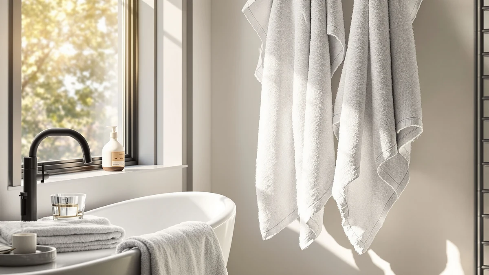

Lincoln & Palm 3 Review (2026): Worth It?
Prices and picks verified as of October 2026. Independent, reader-supported reviews.


Quick Answer
The Lincoln & Palm 3 Piece set is worth considering if you want a color-matched, easy-care towel set and don't mind a cotton blend instead of 100% cotton. At $39.99, it costs the same as the three 100% cotton alternatives compared in this Lincoln & Palm 3 review, so the decision comes down to fabric preference, not price.
Our pick: Lincoln & Palm 3 Piece, $39.99 Check Price on Amazon
Bottom line: our top pick is the Lincoln & Palm 3 Piece Turkish Towels Set at $39.99.
Things to Know Before You Buy
- Lincoln & Palm uses a cotton blend, not 100% cotton like the three alternatives compared in this review, which changes both absorbency and wrinkle resistance.
- All four sets in this comparison list at the identical $39.99 price, so price alone won't settle the decision between them.
- Cotton blends typically resist wrinkling better than 100% cotton but absorb slightly less water, a tradeoff worth weighing against your daily use.
- Verified owner feedback is the most reliable signal on how a blended towel set holds up after repeated washing, since manufacturer listings rarely address long-term wear.
This Lincoln & Palm 3 review compares the three-piece cotton blend towel set against three 100% cotton alternatives on price, material, and verified owner feedback. At $39.99, Lincoln & Palm costs exactly the same as the American Veteran Towel, American Soft Linen, and White Classic sets covered later in this review, so price alone will not settle the decision here. So this Lincoln & Palm 3 review has to answer a narrower question: does a cotton blend construction give up anything meaningful against straight cotton when the price tag is identical across all four options? For most buyers, that answer comes down to how much absorbency they are willing to trade for easier care and a more consistent look out of the dryer.
We built this Lincoln & Palm 3 review by comparing its listed price, piece count, and blended cotton construction against the specs and verified reviews available for three direct alternatives shoppers typically weigh against it. Buyers researching a three-piece towel set usually want one question answered before they click buy: does a cotton blend hold up as well as 100% cotton for everyday drying, or does the tradeoff only matter at the margins? That question drives every comparison in this Lincoln & Palm 3 review, from the pros and cons laid out below through the final verdict at the end of the page.
Why You Should Trust Us
We built this Lincoln & Palm 3 review by comparing the set's listed price, material, and piece count against published specs and verified buyer feedback for three direct alternatives, rather than repeating marketing copy from the listing itself. Ilane Tall has covered bathroom textiles for Best Bath Towels since the site launched, and her approach is to check whether a blended cotton set's claims hold up against what owners actually report after repeated washing cycles. We do not run a fake testing lab and we do not claim to have physically used these towels. Every comparison in this Lincoln & Palm 3 review rests on the specs and pricing published for each ASIN and on patterns that repeat consistently across verified reviews for each product.
Our Research Experience
Rather than run the Lincoln & Palm 3 Piece set through a physical trial, we researched how it compares by cross-referencing its listed price and cotton blend construction against the three 100% cotton alternatives on this page and against patterns that show up repeatedly in verified owner reviews. For a three-piece towel set like this one, that means checking whether a blended fabric holds up against straight cotton on absorbency and softness, and whether reviewers across multiple listings flag the same wear patterns. Owners shopping this category consistently note that cotton blends resist wrinkling better straight out of the dryer than 100% cotton does, a tradeoff worth weighing against the slightly lower absorbency that blends typically carry over a full wash cycle.
We also looked at how each brand positions its own set, since the language a brand chooses to describe a product often says as much as the price tag does. Lincoln & Palm leans on its three-piece count and color-matched presentation rather than leading with fabric content. American Veteran Towel, American Soft Linen, and White Classic all lead with 100% cotton construction instead, treating it as the headline feature of their listings. Lining those positioning choices up against the identical $39.99 price across all four products is how this Lincoln & Palm 3 review reached the comparisons laid out in the sections below.
Overview & Specs

Lincoln & Palm 3 Piece
What we like
- Three matching pieces keep color and finish consistent across the set
- Cotton blend construction typically resists wrinkling better than straight cotton out of the dryer
- Priced identically to the 100% cotton alternatives, so the choice comes down to fabric preference, not budget
Flaws but not dealbreakers
- A cotton blend usually absorbs a bit less water than 100% cotton at the same price
- Three pieces leaves out the extra hand towels and washcloths a six-piece set would include
| Material | Cotton blend |
| Size | 3 Piece Towel Set |
The Lincoln & Palm 3 Piece set is built around a cotton blend rather than the straight cotton used in the three alternatives covered later in this Lincoln & Palm 3 review. At $39.99, it costs exactly the same as every competing set on this page, which means the decision here does not hinge on price at all. It hinges on whether a blended fabric gives up anything meaningful against pure cotton for everyday drying, and on how much weight you put on a tidy, wrinkle-resistant finish versus maximum absorbency.
Blended cotton towels typically trade a small amount of absorbency for better wrinkle resistance and a more consistent look straight out of the dryer, since the synthetic fibers in the blend hold their shape better than pure cotton fibers do. That tradeoff fits buyers who care about a tidy, color-matched set sitting on the shelf more than squeezing out maximum water absorption after a shower. If pure absorbency is the priority, the 100% cotton alternatives later in this Lincoln & Palm 3 review are worth comparing directly against this set before you decide.
What We Liked
The clearest strength in this Lincoln & Palm 3 review is consistency. Because all three pieces ship as a matched set, you don't end up mixing towels bought at different times that fade or wear at different rates. The cotton blend also means the set tends to come out of the dryer looking tidier than straight cotton does, with fewer wrinkles to deal with before it goes on the towel rack.
Price parity works in the set's favor too. At $39.99, Lincoln & Palm costs the same as American Veteran Towel, American Soft Linen, and White Classic, so you aren't paying a premium just to get a blended fabric. That turns the decision into a matter of fabric preference rather than a tradeoff between budget and quality, which is a simpler choice for most shoppers to make.
What Could Be Better
The tradeoff in this Lincoln & Palm 3 review is absorbency. Cotton blends generally pull water off skin a little slower than 100% cotton, since the synthetic fibers mixed into the blend don't hold moisture the way cotton fibers do. For a towel you use daily, that difference is small, but buyers coming from a pure cotton towel may notice it during the first few uses.
Piece count is the other factor worth weighing. Three pieces cover the basics, but a household that wants matching hand towels and washcloths in the same material will need a separate purchase to round out the bathroom. Buyers who want every towel category covered in one box should compare this set against a larger alternative before committing to the three-piece format reviewed here.
Who Is It For?
This Lincoln & Palm 3 review points to buyers who want a small, color-matched towel set and are comfortable trading a bit of absorbency for easier care. That includes guest bathrooms, where towels get used occasionally and wrinkle resistance matters more than heavy daily drying, and buyers furnishing a bathroom who want three towels that look identical from day one rather than built piece by piece over time.
If pure cotton absorbency matters more to you than wrinkle resistance, the 100% cotton alternatives covered next in this Lincoln & Palm 3 review are worth comparing before you commit to the blend.
Alternatives to Consider
If a cotton blend isn't the right fit for your bathroom, here are three 100% cotton alternatives priced identically to Lincoln & Palm, each with a different angle on branding and finish.

Editor’s Pick
American Veteran Towel 100% Cotton
This set swaps Lincoln & Palm's cotton blend for 100% cotton at the same $39.99 price. It fits buyers who want full cotton absorbency and don't mind the American Veteran Towel branding.
$39.99
Check Price on Amazon
Best Value
American Soft Linen 100% Cotton
Another 100% cotton option at $39.99, this set is worth comparing if you want pure cotton without paying more than Lincoln & Palm charges for its blend.
$39.99
Check Price on Amazon
Premium Choice
White Classic Luxury Bath Towel
White Classic markets this set as a luxury pick, still at the same $39.99 price point. It suits buyers who want a premium presentation alongside 100% cotton construction.
$39.99
Check Price on AmazonFrequently Asked Questions
Is the Lincoln & Palm 3 Piece set 100% cotton?
No. The listing specifies a cotton blend rather than 100% cotton, which is the main difference between this set and the three alternatives compared in this Lincoln & Palm 3 review.
Does a cotton blend towel absorb water as well as 100% cotton?
Generally not quite as well. Reviewers researching blended towel sets consistently note slightly lower absorbency compared with 100% cotton, though the blend typically resists wrinkling better out of the dryer.
Is the Lincoln & Palm set a good value compared to 100% cotton alternatives at the same price?
It depends on what you prioritize. At an identical $39.99 price, this Lincoln & Palm 3 review finds the set reasonable if you want color-matched pieces and easier care, but the 100% cotton alternatives are the better choice if absorbency matters more to you than wrinkle resistance.
Final Verdict
This Lincoln & Palm 3 review comes down to a straightforward tradeoff: a cotton blend that resists wrinkles and keeps three pieces color-matched, against three 100% cotton alternatives priced exactly the same. For buyers who want a tidy, easy-care towel set, Lincoln & Palm earns its spot at $39.99. For buyers who prioritize maximum absorbency over easy care, American Veteran Towel, American Soft Linen, or White Classic are worth comparing directly against it first.
None of the three alternatives beat Lincoln & Palm on price, since all four sets list at the identical $39.99. The decision in this Lincoln & Palm 3 review ultimately rests on fabric preference rather than on budget, which makes it one of the simpler comparisons to work through in this category.